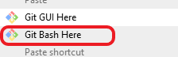

Chapter 2 Getting started
2.1 Installing git
You will need to install git. How to do this is explained here:
https://git-scm.com/book/en/v2/Getting-Started-Installing-Git
2.2 Getting a git-hub account
Get a GitHub account here: https://github.com/join
If you are a student or a university researcher you might be elligible for a free pro account. Check out your options here:
How to prevent git from demanding your GitHub user name and password all the time can be read here:
https://help.github.com/en/github/authenticating-to-github/connecting-to-github-with-ssh
2.3 Initial setup
After the installation there are a few customizations that only have to be done once (well once on every computer you work with). They involve telling git your name, your email address, your favourite text editor and linking to your git-hub account. If you are planning on collaborating with people who use a different operating system than you, it is wise to also tell git how to handle line endings.
2.3.1 Setting the configuration information
Windows: Rightclick anywhere in a filebrowser and click: “Git BASH HERE” 
This will open a command line where you will have to enter the following information:
$ git config --global user.name "<Your name>"
$ git config --global user.email "<your email address>"
The editor to change commit messages is usually whatever you have as a default associated to .txt files
you can change it like this
$ git config --global core.editor "<name of my favourite editor>"
Instead of --global you can use --local for a repository or --system for your computer only.
This might make sense when you might be commititing changes under an alias e.g. for a collaborator who can’t use git
(see section xyx for more details).
Alternatively open git gui by typing/
$ git gui in the command line
GitGUI will open click the tab “Edit” and then “Options”
There are a few more options that are smart to set.
You can open the config file in an editor like this:
$ git config --global -e --edit
2.3.2 Line ending
Windows, Unix and Mac use different line endings. (CRLF = Windows line endings; LF = unix and mac line endings)
When your collaborator uses an OS with different line endings it can happen that the diff will indicate that every line of a file was changes even though that is not actially the case.
Adding the following line to the git config transforms windows line endings into linux line endings and prevents potential line ending related issues.
git config --global core.autocrlf input